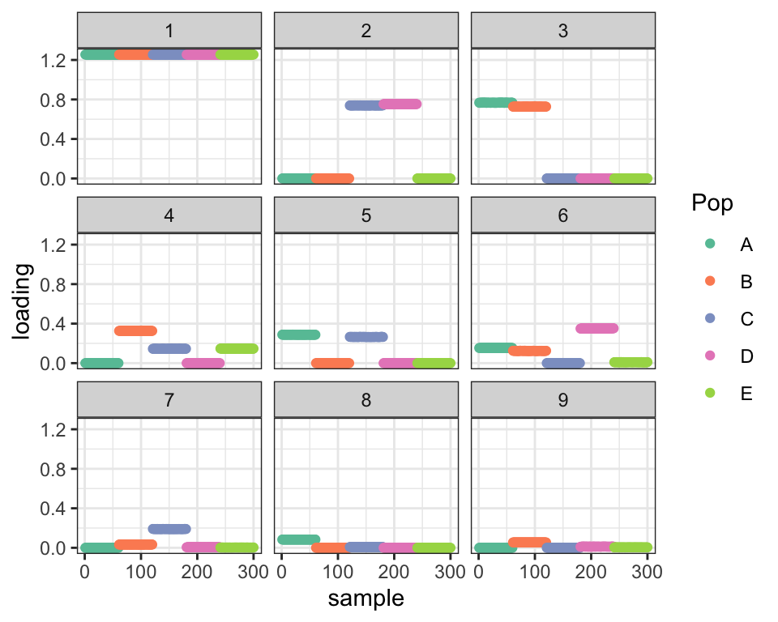
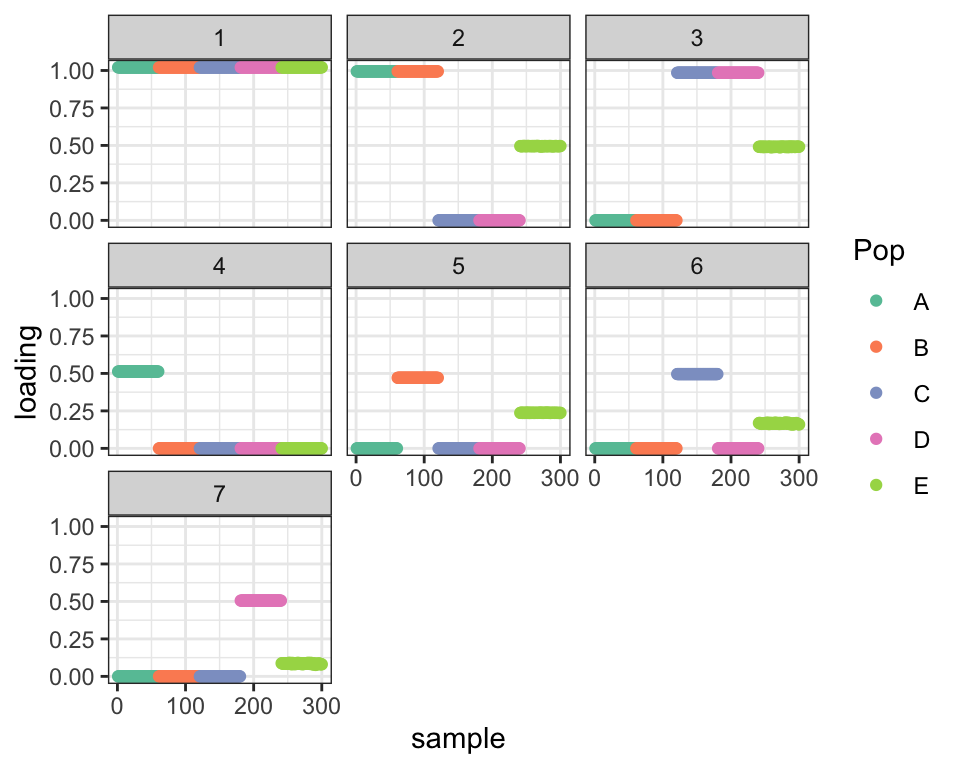
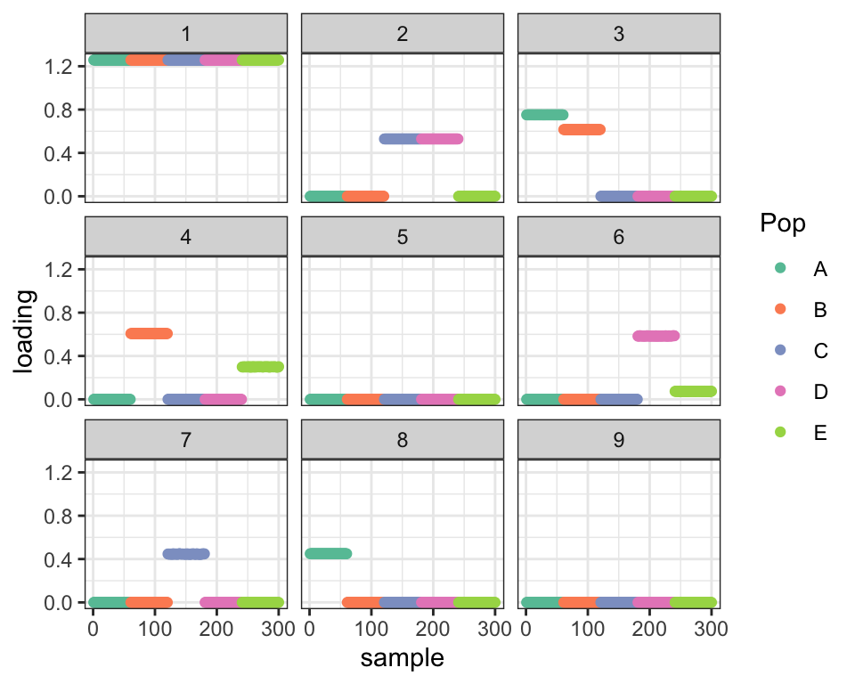

Random initialization
Jason Willwerscheid
7/6/2020
Last updated: 2020-07-06
Checks: 6 0
Knit directory: drift-workflow/analysis/
This reproducible R Markdown analysis was created with workflowr (version 1.2.0). The Report tab describes the reproducibility checks that were applied when the results were created. The Past versions tab lists the development history.
Great! Since the R Markdown file has been committed to the Git repository, you know the exact version of the code that produced these results.
Great job! The global environment was empty. Objects defined in the global environment can affect the analysis in your R Markdown file in unknown ways. For reproduciblity it’s best to always run the code in an empty environment.
The command set.seed(20190211) was run prior to running the code in the R Markdown file. Setting a seed ensures that any results that rely on randomness, e.g. subsampling or permutations, are reproducible.
Great job! Recording the operating system, R version, and package versions is critical for reproducibility.
Nice! There were no cached chunks for this analysis, so you can be confident that you successfully produced the results during this run.
Great! You are using Git for version control. Tracking code development and connecting the code version to the results is critical for reproducibility. The version displayed above was the version of the Git repository at the time these results were generated.
Note that you need to be careful to ensure that all relevant files for the analysis have been committed to Git prior to generating the results (you can use wflow_publish or wflow_git_commit). workflowr only checks the R Markdown file, but you know if there are other scripts or data files that it depends on. Below is the status of the Git repository when the results were generated:
Ignored files:
Ignored: .DS_Store
Ignored: .Rhistory
Ignored: .Rproj.user/
Ignored: docs/.DS_Store
Ignored: docs/assets/.DS_Store
Ignored: output/
Untracked files:
Untracked: analysis/extrapolate3.Rmd
Untracked: analysis/extrapolate4.Rmd
Unstaged changes:
Modified: drift-workflow.Rproj
Note that any generated files, e.g. HTML, png, CSS, etc., are not included in this status report because it is ok for generated content to have uncommitted changes.
These are the previous versions of the R Markdown and HTML files. If you’ve configured a remote Git repository (see ?wflow_git_remote), click on the hyperlinks in the table below to view them.
| File | Version | Author | Date | Message |
|---|---|---|---|---|
| Rmd | 69b2b49 | Jason Willwerscheid | 2020-07-06 | wflow_publish(“analysis/random_init.Rmd”) |
suppressMessages({
library(flashier)
library(drift.alpha)
library(tidyverse)
})Introduction
I use the four-population tree from a previous analysis:
| Version | Author | Date |
|---|---|---|
| df6dbda | Jason Willwerscheid | 2020-06-06 |
Here, I add an admixed population \(E\) with admixture proportions of \(1/2\) from population \(B\), \(1/3\) from population \(C\), and \(1/6\) from population \(D\). So, individuals from population \(A\) have data distributed \[N \left(\frac{1}{2}(a + b + e) + \frac{1}{3}(a + c + f) + \frac{1}{6}(a + c + g),\ \sigma_r^2 I_p \right)\] I simulate data for 60 individuals per population.
set.seed(666)
n_per_pop <- 60
p <- 10000
a <- rnorm(p)
b <- rnorm(p)
c <- rnorm(p)
d <- rnorm(p, sd = 0.5)
e <- rnorm(p, sd = 0.5)
f <- rnorm(p, sd = 0.5)
g <- rnorm(p, sd = 0.5)
popA <- c(rep(1, n_per_pop), rep(0, 4 * n_per_pop))
popB <- c(rep(0, n_per_pop), rep(1, n_per_pop), rep(0, 3 * n_per_pop))
popC <- c(rep(0, 2 * n_per_pop), rep(1, n_per_pop), rep(0, 2 * n_per_pop))
popD <- c(rep(0, 3 * n_per_pop), rep(1, n_per_pop), rep(0, n_per_pop))
popE <- c(rep(0, 4 * n_per_pop), rep(1, n_per_pop))
E.factor <- (a + b + e) / 2 + (a + c + f) / 3 + (a + c + g) / 6
Y <- cbind(popA, popB, popC, popD, popE) %*%
rbind(a + b + d, a + b + e, a + c + f, a + c + g, E.factor)
Y <- Y + rnorm(5 * n_per_pop * p, sd = 0.1)
plot_dr <- function(dr) {
sd <- sqrt(dr$prior_s2)
L <- dr$EL
LDsqrt <- L %*% diag(sd)
K <- ncol(LDsqrt)
plot_loadings(LDsqrt[,1:K], rep(c("A", "B", "C", "D", "E"), each = n_per_pop)) +
scale_color_brewer(palette="Set2")
}Greedy fit
greedy <- init_from_data(Y)
plot_dr(greedy)
Optimal fit
If I initialize the loadings at their “true” values, I get the following fit:
dr_true <- init_from_EL(Y,
cbind(popA + popB + popC + popD,
popA + popB, popC + popD,
popA, popB, popC, popD),
cbind(a, b, c, d, e, f, g))
dr_true <- suppressWarnings({
drift(dr_true, miniter = 2, verbose = FALSE, tol = 1e-4, maxiter = 2000)
})
plot_dr(dr_true)
Default drift fit
Initializing at the greedy flashier fit and then running drift (using extrapolation with beta.max = 1) yields a much lower ELBO.
options(extrapolate.control = list(beta.max = 1))
dr_default <- drift(greedy, tol = 1e-4, miniter = 2, maxiter = 2000, verbose = FALSE)
cat("Optimal ELBO (true factors):", dr_true$elbo,
"\nDefault fit ELBO: ", dr_default$elbo,
"\nDifference: ", dr_true$elbo - dr_default$elbo, "\n")#> Optimal ELBO (true factors): 2473652
#> Default fit ELBO: 2443615
#> Difference: 30036.87
plot_dr(dr_default)
Random initialization
Next I run 10 trials with randomly initialized loadings. (The errors can safely be ignored.) I fix K = 9 (the number of factors in the greedy fit) and keep the trial with the best ELBO after 100 iterations. I then run drift on this trial until convergence. The resulting ELBO is much better than the ELBO obtained using the default method, but the four population-specific factors get combined into two factors.
ntrials <- 10
elbo_vec <- rep(NA, ntrials)
rand_fit <- function(seed, K = 9, maxiter = 100, tol = 1e-4, verbose = FALSE) {
set.seed(seed)
EL <- matrix(runif(5 * n_per_pop * K), ncol = K)
EL[, 1] <- 1
EF <- t(solve(crossprod(EL), crossprod(EL, Y)))
suppressWarnings({
dr <- drift(init_from_EL(Y, EL, EF), miniter = 20, maxiter = 20,
extrapolate = FALSE, verbose = verbose)
dr <- drift(dr, miniter = 2, maxiter = maxiter, tol = tol,
extrapolate = TRUE, verbose = verbose)
})
return(dr)
}
best_elbo <- -Inf
for (i in 1:ntrials) {
elbo_vec[i] <- -Inf
try({
# cat("TRIAL", i, "\n")
dr <- rand_fit(i)
# cat(" ELBO:", dr$elbo, "\n")
elbo_vec[i] <- dr$elbo
if (dr$elbo > best_elbo) {
best_elbo <- dr$elbo
best_dr <- dr
}
})
}#> Error in check_args(x, s, g_init, fix_g, output) :
#> Missing standard errors are not allowed.
#> Error in check_args(x, s, g_init, fix_g, output) :
#> Missing standard errors are not allowed.rand_dr <- drift(best_dr, maxiter = 2000, tol = 1e-4, verbose = FALSE)
cat("Optimal ELBO (true factors):", dr_true$elbo,
"\nRandom initialization ELBO: ", rand_dr$elbo,
"\nDifference: ", dr_true$elbo - rand_dr$elbo, "\n")#> Optimal ELBO (true factors): 2473652
#> Random initialization ELBO: 2473084
#> Difference: 567.3815
plot_dr(rand_dr)
In fact, all 10 trials yield better ELBOs than the default method:
elbo_df <- tibble(type = c("default", rep("random", 10)),
elbo = c(dr_default$elbo, elbo_vec),
ind = 1:(ntrials + 1))
ggplot(elbo_df, aes(x = ind, y = elbo, col = type)) + geom_point()
sessionInfo()#> R version 3.5.3 (2019-03-11)
#> Platform: x86_64-apple-darwin15.6.0 (64-bit)
#> Running under: macOS Mojave 10.14.6
#>
#> Matrix products: default
#> BLAS: /Library/Frameworks/R.framework/Versions/3.5/Resources/lib/libRblas.0.dylib
#> LAPACK: /Library/Frameworks/R.framework/Versions/3.5/Resources/lib/libRlapack.dylib
#>
#> locale:
#> [1] en_US.UTF-8/en_US.UTF-8/en_US.UTF-8/C/en_US.UTF-8/en_US.UTF-8
#>
#> attached base packages:
#> [1] stats graphics grDevices utils datasets methods base
#>
#> other attached packages:
#> [1] forcats_0.4.0 stringr_1.4.0 dplyr_0.8.0.1
#> [4] purrr_0.3.2 readr_1.3.1 tidyr_0.8.3
#> [7] tibble_2.1.1 ggplot2_3.2.0 tidyverse_1.2.1
#> [10] drift.alpha_0.0.9 flashier_0.2.4
#>
#> loaded via a namespace (and not attached):
#> [1] Rcpp_1.0.4.6 lubridate_1.7.4 invgamma_1.1
#> [4] lattice_0.20-38 assertthat_0.2.1 rprojroot_1.3-2
#> [7] digest_0.6.18 truncnorm_1.0-8 R6_2.4.0
#> [10] cellranger_1.1.0 plyr_1.8.4 backports_1.1.3
#> [13] evaluate_0.13 httr_1.4.0 pillar_1.3.1
#> [16] rlang_0.4.2 lazyeval_0.2.2 readxl_1.3.1
#> [19] rstudioapi_0.10 ebnm_0.1-21 irlba_2.3.3
#> [22] whisker_0.3-2 Matrix_1.2-15 rmarkdown_1.12
#> [25] labeling_0.3 munsell_0.5.0 mixsqp_0.3-40
#> [28] broom_0.5.1 compiler_3.5.3 modelr_0.1.5
#> [31] xfun_0.6 pkgconfig_2.0.2 SQUAREM_2017.10-1
#> [34] htmltools_0.3.6 tidyselect_0.2.5 workflowr_1.2.0
#> [37] withr_2.1.2 crayon_1.3.4 grid_3.5.3
#> [40] nlme_3.1-137 jsonlite_1.6 gtable_0.3.0
#> [43] git2r_0.25.2 magrittr_1.5 scales_1.0.0
#> [46] cli_1.1.0 stringi_1.4.3 reshape2_1.4.3
#> [49] fs_1.2.7 xml2_1.2.0 generics_0.0.2
#> [52] RColorBrewer_1.1-2 tools_3.5.3 glue_1.3.1
#> [55] hms_0.4.2 parallel_3.5.3 yaml_2.2.0
#> [58] colorspace_1.4-1 ashr_2.2-50 rvest_0.3.4
#> [61] knitr_1.22 haven_2.1.1